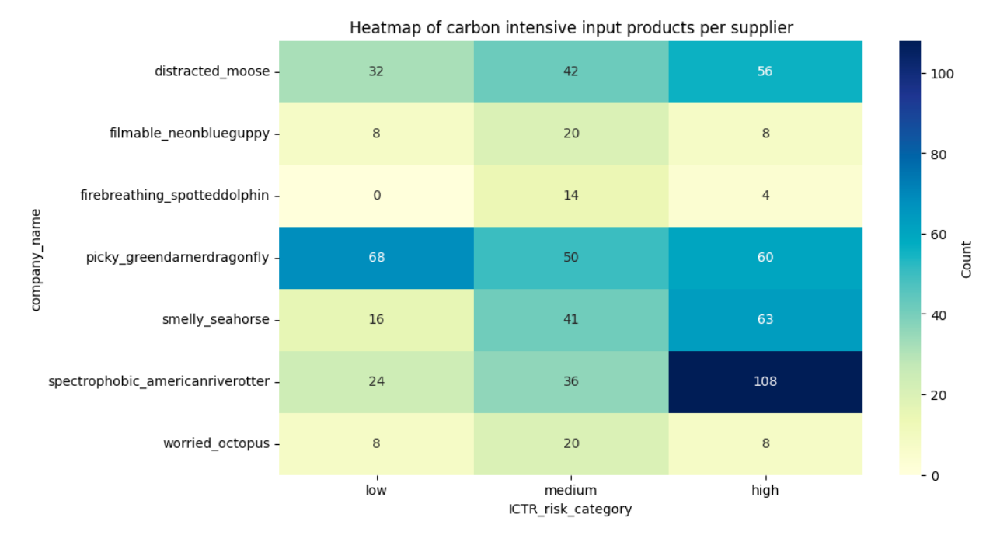

Input and Supply Chain Analysis Model
Source:vignettes/articles/tilt_input_analysis.Rmd
tilt_input_analysis.RmdThis article is a brief documentation of the methodology and tools that tilt provides to analyse the inputs of a company and its supply chain risk.
The tilt input and supply chain risk analysis is based on the two main indicators provided by the tilt methodology and can be either applied to the inputs used for producing a product (“Input Analysis”) or to the suppliers from which products are purchased (“Supplier Analysis”).
The two main indicators of the tilt methodology are the relative emission and the sector decarbonisation indicator. The relative emission indicator is a proxy for the emission intensity of a company’s products in comparison to other products and thereby gives an indication of the impact the product has on the environment. This indicator uses Life-Cycle-Assessment (LCA) data to match a product to their emission footprint and then ranks it in comparison to groups of other products. The sector decarbonisation indicator proxies the transition pressure a company is facing based on the sector decarbonisation targets for its products. This indicator uses sector level climate scenario data mapped to the products and thereby provides information on how much a company must transition to meet the reduction targets of the sector in which it is active. For more details on the methodology of these two indicators, please refer to our detailed documentation provided on our online platform which you can access via this link.
1 Input Analysis
These two indicators cannot only be applied to the products of a company, but also to its inputs, to better understand input-related climate impact and risks. For applying it to inputs, we follow the following two steps:
- We source the input data needed to produce a product in an automated way from Ecoinvent, our LCA data provider.
- As a next step, we then apply the indicators to the inputs to receive results for the inputs’ relative emission and sector decarbonisation indicator.
- We show results on product-level and aggregate them on company-level.
Below, we show the code used to apply these indicators and a more detailed description of each input-level indicator:
1.1 Input Sector Decarbonisation Indicator
The Input Sector Decarbonisation Indicator assesses the transition pressure of the input products based on the sector’s decarbonisation targets the input product belongs to. This indicator can be aggregated on company level and as such inform about the supply chain risk of an SME, based on its inputs’ transition pressure. The sector emission reduction targets vary across scenarios (e.g., WEO NZ 2050 or IPR 1.5 RPS) and the time horizon (e.g., reduction needed until 2030 or 2050 to achieve the targets). The input products are sourced from the LCA data provider Ecoinvent and consist, for example, of resources, packaging materials, energy and enabling services (such as tractor use on farm) to produce the product.
After assigning each input product to a tilt subsector, we can map it to a scenario sector and thereby derive the sector decarbonisation target. Depending on the magnitude of the reduction target, the product is categorised as having a low, medium or high reduction target. The categorisation method based on thresholds is explained in the Thresholds section or in the detailed documentation on our Online Platform (see link in intro).
After assessing the input products for each product, they are aggregated at company-level to derive what percentage of the input products required by the company to produce its products have high, medium and low sector decarbonisation targets.
NOTE: While the scenario data are freely available, input data from ecoinvent are licensed and can therefore not be shown below. Therefore, the calculations are based on fake data. If a user has an ecoinvent license to access the real data, this code can be used to calculate real results.
Below, the code first loads the input data, and then passes the input data to the profile_sector_upstream function (from tiltIndicatorAfter). At last, this function calculates the indicator’s product and company-level results.
# Load input data
sector_companies <- read_csv(toy_sector_profile_upstream_companies())
sector_inputs <- read_csv(toy_sector_profile_upstream_products())
scenarios <- read_csv(toy_sector_profile_any_scenarios())
europages_companies <- read_csv(toy_europages_companies())
ecoinvent_activities <- read_csv(toy_ecoinvent_activities())
ecoinvent_europages <- read_csv(toy_ecoinvent_europages())
isic_name <- read_csv(toy_isic_name())
ecoinvent_inputs <- read_csv(toy_ecoinvent_inputs())
# `profile_sector_upstream()` creates product and company level outputs for
# Input Sector Decarbonisation Indicator
input_sector_decarbonisation_indicator <- profile_sector_upstream(
sector_companies,
scenarios,
sector_inputs,
europages_companies = europages_companies,
ecoinvent_activities = ecoinvent_activities,
ecoinvent_inputs = ecoinvent_inputs,
ecoinvent_europages = ecoinvent_europages,
isic = isic_name
)1.1.1 Input Sector Decarbonisation Indicator at product level
input_sector_decarbonisation_indicator_at_product_level <- input_sector_decarbonisation_indicator |>
unnest_product()
kable(input_sector_decarbonisation_indicator_at_product_level |> head(10), format = "html", escape = FALSE) |>
column_spec(1:32, width = "auto", extra_css = "white-space: nowrap;") |>
row_spec(0, extra_css = "white-space: nowrap;")| companies_id | company_name | country | sector_profile_upstream | reduction_targets | scenario | year | ep_product | matched_activity_name | matched_reference_product | unit | tilt_sector | multi_match | matching_certainty | matching_certainty_company_average | input_name | input_unit | input_tilt_sector | input_tilt_subsector | company_city | postcode | address | main_activity | activity_uuid_product_uuid | input_isic_4digit | sector_scenario | subsector_scenario | ei_input_geography | min_headcount | max_headcount | input_isic_4digit_name | ei_geography |
|---|---|---|---|---|---|---|---|---|---|---|---|---|---|---|---|---|---|---|---|---|---|---|---|---|---|---|---|---|---|---|---|
| asteria_megalotomusquinquespinosus | asteria_megalotomusquinquespinosus | austria | medium | 0.18 | 1.5C RPS | 2030 | tent | market for shed, large, wood, non-insulated, fire-unprotected | shed, large, wood, non-insulated, fire-unprotected | m2 | construction | FALSE | low | low | shed, large, wood, non-insulated, fire-unprotected | m2 | construction | construction residential | wilhelmsburg | 3150 | fleschplatz 2, top 5 | 3150 wilhelmsburg | wholesaler | 76269c17-78d6-420b-991a-aa38c51b45b7 | ‘4100’ | buildings | NA | tilt_land | 1 | 10 | Construction of buildings | tilt_world |
| asteria_megalotomusquinquespinosus | asteria_megalotomusquinquespinosus | austria | high | 0.98 | 1.5C RPS | 2050 | tent | market for shed, large, wood, non-insulated, fire-unprotected | shed, large, wood, non-insulated, fire-unprotected | m2 | construction | FALSE | low | low | shed, large, wood, non-insulated, fire-unprotected | m2 | construction | construction residential | wilhelmsburg | 3150 | fleschplatz 2, top 5 | 3150 wilhelmsburg | wholesaler | 76269c17-78d6-420b-991a-aa38c51b45b7 | ‘4100’ | buildings | NA | tilt_land | 1 | 10 | Construction of buildings | tilt_world |
| asteria_megalotomusquinquespinosus | asteria_megalotomusquinquespinosus | austria | high | 0.40 | NZ 2050 | 2030 | tent | market for shed, large, wood, non-insulated, fire-unprotected | shed, large, wood, non-insulated, fire-unprotected | m2 | construction | FALSE | low | low | shed, large, wood, non-insulated, fire-unprotected | m2 | construction | construction residential | wilhelmsburg | 3150 | fleschplatz 2, top 5 | 3150 wilhelmsburg | wholesaler | 76269c17-78d6-420b-991a-aa38c51b45b7 | ‘4100’ | total | residential | tilt_land | 1 | 10 | Construction of buildings | tilt_world |
| asteria_megalotomusquinquespinosus | asteria_megalotomusquinquespinosus | austria | high | 0.97 | NZ 2050 | 2050 | tent | market for shed, large, wood, non-insulated, fire-unprotected | shed, large, wood, non-insulated, fire-unprotected | m2 | construction | FALSE | low | low | shed, large, wood, non-insulated, fire-unprotected | m2 | construction | construction residential | wilhelmsburg | 3150 | fleschplatz 2, top 5 | 3150 wilhelmsburg | wholesaler | 76269c17-78d6-420b-991a-aa38c51b45b7 | ‘4100’ | total | residential | tilt_land | 1 | 10 | Construction of buildings | tilt_world |
| skarn_gallinule | skarn_gallinule | austria | medium | 0.18 | 1.5C RPS | 2030 | sheds, construction site | market for shed, large, wood, non-insulated, fire-unprotected | shed, large, wood, non-insulated, fire-unprotected | m2 | construction | FALSE | low | low | shed, large, wood, non-insulated, fire-unprotected | m2 | construction | construction residential | wiener neudorf | 2355 | iz nö-süd, strasse 14, objekt 15 | 2355 wiener neudorf | wholesaler | 76269c17-78d6-420b-991a-aa38c51b45b7 | ‘4100’ | buildings | NA | tilt_land | 1 | 10 | Construction of buildings | tilt_world |
| skarn_gallinule | skarn_gallinule | austria | high | 0.98 | 1.5C RPS | 2050 | sheds, construction site | market for shed, large, wood, non-insulated, fire-unprotected | shed, large, wood, non-insulated, fire-unprotected | m2 | construction | FALSE | low | low | shed, large, wood, non-insulated, fire-unprotected | m2 | construction | construction residential | wiener neudorf | 2355 | iz nö-süd, strasse 14, objekt 15 | 2355 wiener neudorf | wholesaler | 76269c17-78d6-420b-991a-aa38c51b45b7 | ‘4100’ | buildings | NA | tilt_land | 1 | 10 | Construction of buildings | tilt_world |
| skarn_gallinule | skarn_gallinule | austria | high | 0.40 | NZ 2050 | 2030 | sheds, construction site | market for shed, large, wood, non-insulated, fire-unprotected | shed, large, wood, non-insulated, fire-unprotected | m2 | construction | FALSE | low | low | shed, large, wood, non-insulated, fire-unprotected | m2 | construction | construction residential | wiener neudorf | 2355 | iz nö-süd, strasse 14, objekt 15 | 2355 wiener neudorf | wholesaler | 76269c17-78d6-420b-991a-aa38c51b45b7 | ‘4100’ | total | residential | tilt_land | 1 | 10 | Construction of buildings | tilt_world |
| skarn_gallinule | skarn_gallinule | austria | high | 0.97 | NZ 2050 | 2050 | sheds, construction site | market for shed, large, wood, non-insulated, fire-unprotected | shed, large, wood, non-insulated, fire-unprotected | m2 | construction | FALSE | low | low | shed, large, wood, non-insulated, fire-unprotected | m2 | construction | construction residential | wiener neudorf | 2355 | iz nö-süd, strasse 14, objekt 15 | 2355 wiener neudorf | wholesaler | 76269c17-78d6-420b-991a-aa38c51b45b7 | ‘4100’ | total | residential | tilt_land | 1 | 10 | Construction of buildings | tilt_world |
| psychodelic_airedale | psychodelic_airedale | austria | medium | 0.18 | 1.5C RPS | 2030 | tent | market for shed, large, wood, non-insulated, fire-unprotected | shed, large, wood, non-insulated, fire-unprotected | m2 | construction | FALSE | low | low | shed, large, wood, non-insulated, fire-unprotected | m2 | construction | construction residential | neustift im stubaital | 6167 | neugasteig 76 | 6167 neustift im stubaital | distributor | 76269c17-78d6-420b-991a-aa38c51b45b7 | ‘4100’ | buildings | NA | tilt_land | 1 | 10 | Construction of buildings | tilt_world |
| psychodelic_airedale | psychodelic_airedale | austria | high | 0.98 | 1.5C RPS | 2050 | tent | market for shed, large, wood, non-insulated, fire-unprotected | shed, large, wood, non-insulated, fire-unprotected | m2 | construction | FALSE | low | low | shed, large, wood, non-insulated, fire-unprotected | m2 | construction | construction residential | neustift im stubaital | 6167 | neugasteig 76 | 6167 neustift im stubaital | distributor | 76269c17-78d6-420b-991a-aa38c51b45b7 | ‘4100’ | buildings | NA | tilt_land | 1 | 10 | Construction of buildings | tilt_world |
1.1.2 Input Sector Decarbonisation Indicator at company level
input_sector_decarbonisation_indicator_at_company_level <- input_sector_decarbonisation_indicator |>
unnest_company()
kable(input_sector_decarbonisation_indicator_at_company_level |> head(10), format = "html", escape = FALSE) |>
column_spec(1:13, width = "auto", extra_css = "white-space: nowrap;") |>
row_spec(0, extra_css = "white-space: nowrap;")| companies_id | company_name | country | sector_profile_upstream_share | sector_profile_upstream | scenario | year | matching_certainty_company_average | company_city | postcode | address | main_activity | reduction_targets_avg |
|---|---|---|---|---|---|---|---|---|---|---|---|---|
| asteria_megalotomusquinquespinosus | asteria_megalotomusquinquespinosus | austria | 0 | high | 1.5C RPS | 2030 | low | wilhelmsburg | 3150 | fleschplatz 2, top 5 | 3150 wilhelmsburg | wholesaler | 0.18 |
| asteria_megalotomusquinquespinosus | asteria_megalotomusquinquespinosus | austria | 1 | medium | 1.5C RPS | 2030 | low | wilhelmsburg | 3150 | fleschplatz 2, top 5 | 3150 wilhelmsburg | wholesaler | 0.18 |
| asteria_megalotomusquinquespinosus | asteria_megalotomusquinquespinosus | austria | 0 | low | 1.5C RPS | 2030 | low | wilhelmsburg | 3150 | fleschplatz 2, top 5 | 3150 wilhelmsburg | wholesaler | 0.18 |
| asteria_megalotomusquinquespinosus | asteria_megalotomusquinquespinosus | austria | 0 | NA | 1.5C RPS | 2030 | low | wilhelmsburg | 3150 | fleschplatz 2, top 5 | 3150 wilhelmsburg | wholesaler | 0.18 |
| asteria_megalotomusquinquespinosus | asteria_megalotomusquinquespinosus | austria | 1 | high | 1.5C RPS | 2050 | low | wilhelmsburg | 3150 | fleschplatz 2, top 5 | 3150 wilhelmsburg | wholesaler | 0.98 |
| asteria_megalotomusquinquespinosus | asteria_megalotomusquinquespinosus | austria | 0 | medium | 1.5C RPS | 2050 | low | wilhelmsburg | 3150 | fleschplatz 2, top 5 | 3150 wilhelmsburg | wholesaler | 0.98 |
| asteria_megalotomusquinquespinosus | asteria_megalotomusquinquespinosus | austria | 0 | low | 1.5C RPS | 2050 | low | wilhelmsburg | 3150 | fleschplatz 2, top 5 | 3150 wilhelmsburg | wholesaler | 0.98 |
| asteria_megalotomusquinquespinosus | asteria_megalotomusquinquespinosus | austria | 0 | NA | 1.5C RPS | 2050 | low | wilhelmsburg | 3150 | fleschplatz 2, top 5 | 3150 wilhelmsburg | wholesaler | 0.98 |
| asteria_megalotomusquinquespinosus | asteria_megalotomusquinquespinosus | austria | 1 | high | NZ 2050 | 2030 | low | wilhelmsburg | 3150 | fleschplatz 2, top 5 | 3150 wilhelmsburg | wholesaler | 0.40 |
| asteria_megalotomusquinquespinosus | asteria_megalotomusquinquespinosus | austria | 0 | medium | NZ 2050 | 2030 | low | wilhelmsburg | 3150 | fleschplatz 2, top 5 | 3150 wilhelmsburg | wholesaler | 0.40 |
1.2 Input Relative Emission Indicator
The Input Relative Emission Indicator assesses the relative emission intensity of the input products based on their relative GHG emission footprint in comparison to groups of other products (for more information on the different groups at disposal, please refer to our detailed documentation on our online platform). Input products with a higher emission intensity also face a higher risk from climate policy interventions or low-carbon market changes. The input products are sourced from the LCA data provider Ecoinvent and consist, for example, of resources, packaging materials, energy and enabling services (such as tractor use on farm) to produce the product.
After assessing the input products’ climate impact based on their emission intensity, they are aggregated at the company-level. We derive what percentage of the input products have a high, medium and low emission intensity.
NOTE: GHG emission and input data from ecoinvent are licensed and can therefore not be shown below. Therefore, the calculations are based on fake data. If a user has an ecoinvent license to access the real data, this code can be used to calculate real results.
Below, the code first loads the input data, and then passes the input data to the profile_emissions_upstream function (from tiltIndicatorAfter). At last, this function calculates the indicator’s product and company-level results.
# Load input data
emissions_companies <- read_csv(toy_emissions_profile_any_companies())
emission_inputs <- read_csv(toy_emissions_profile_upstream_products_ecoinvent())
europages_companies <- read_csv(toy_europages_companies())
ecoinvent_activities <- read_csv(toy_ecoinvent_activities())
ecoinvent_europages <- read_csv(toy_ecoinvent_europages())
isic_name <- read_csv(toy_isic_name())
ecoinvent_inputs <- read_csv(toy_ecoinvent_inputs())
# `profile_emissions_upstream()` creates product and company level outputs for
# Input Relative Emission Indicator
input_relative_emission_indicator <- profile_emissions_upstream(
emissions_companies,
emission_inputs,
europages_companies = europages_companies,
ecoinvent_activities = ecoinvent_activities,
ecoinvent_inputs = ecoinvent_inputs,
ecoinvent_europages = ecoinvent_europages,
isic = isic_name
)1.2.1 Input Relative Emission Indicator at product level
input_relative_emission_indicator_at_product_level <- input_relative_emission_indicator |>
unnest_product()
kable(input_relative_emission_indicator_at_product_level |> head(10), format = "html", escape = FALSE) |>
column_spec(1:31, width = "auto", extra_css = "white-space: nowrap;") |>
row_spec(0, extra_css = "white-space: nowrap;")| companies_id | company_name | country | emission_upstream_profile | benchmark | ep_product | matched_activity_name | matched_reference_product | unit | multi_match | matching_certainty | matching_certainty_company_average | input_name | input_unit | input_tilt_sector | input_tilt_subsector | input_isic_4digit | input_isic_4digit_name | company_city | postcode | address | main_activity | activity_uuid_product_uuid | profile_ranking | ei_input_geography | min_headcount | max_headcount | ei_geography | input_activity_uuid_product_uuid | co2e_lower | co2e_upper |
|---|---|---|---|---|---|---|---|---|---|---|---|---|---|---|---|---|---|---|---|---|---|---|---|---|---|---|---|---|---|---|
| asteria_megalotomusquinquespinosus | asteria_megalotomusquinquespinosus | austria | high | all | tent | market for shed, large, wood, non-insulated, fire-unprotected | shed, large, wood, non-insulated, fire-unprotected | m2 | FALSE | low | low | shed, large, wood, non-insulated, fire-unprotected | m2 | construction | construction residential | ‘4100’ | Construction of buildings | wilhelmsburg | 3150 | fleschplatz 2, top 5 | 3150 wilhelmsburg | wholesaler | 76269c17-78d6-420b-991a-aa38c51b45b7 | 0.9375 | tilt_land | 1 | 10 | tilt_world | 44e5e288-4f81-40d0-88b4-e79eaea6574c | -0.0161997 | 8.766183e+08 |
| asteria_megalotomusquinquespinosus | asteria_megalotomusquinquespinosus | austria | high | input_isic_4digit | tent | market for shed, large, wood, non-insulated, fire-unprotected | shed, large, wood, non-insulated, fire-unprotected | m2 | FALSE | low | low | shed, large, wood, non-insulated, fire-unprotected | m2 | construction | construction residential | ‘4100’ | Construction of buildings | wilhelmsburg | 3150 | fleschplatz 2, top 5 | 3150 wilhelmsburg | wholesaler | 76269c17-78d6-420b-991a-aa38c51b45b7 | 1.0000 | tilt_land | 1 | 10 | tilt_world | 44e5e288-4f81-40d0-88b4-e79eaea6574c | 295.1030659 | 5.780160e+02 |
| asteria_megalotomusquinquespinosus | asteria_megalotomusquinquespinosus | austria | high | input_tilt_subsector | tent | market for shed, large, wood, non-insulated, fire-unprotected | shed, large, wood, non-insulated, fire-unprotected | m2 | FALSE | low | low | shed, large, wood, non-insulated, fire-unprotected | m2 | construction | construction residential | ‘4100’ | Construction of buildings | wilhelmsburg | 3150 | fleschplatz 2, top 5 | 3150 wilhelmsburg | wholesaler | 76269c17-78d6-420b-991a-aa38c51b45b7 | 1.0000 | tilt_land | 1 | 10 | tilt_world | 44e5e288-4f81-40d0-88b4-e79eaea6574c | -82.9665824 | 5.177974e+02 |
| asteria_megalotomusquinquespinosus | asteria_megalotomusquinquespinosus | austria | high | input_unit | tent | market for shed, large, wood, non-insulated, fire-unprotected | shed, large, wood, non-insulated, fire-unprotected | m2 | FALSE | low | low | shed, large, wood, non-insulated, fire-unprotected | m2 | construction | construction residential | ‘4100’ | Construction of buildings | wilhelmsburg | 3150 | fleschplatz 2, top 5 | 3150 wilhelmsburg | wholesaler | 76269c17-78d6-420b-991a-aa38c51b45b7 | 1.0000 | tilt_land | 1 | 10 | tilt_world | 44e5e288-4f81-40d0-88b4-e79eaea6574c | 183.1011401 | 4.507805e+02 |
| asteria_megalotomusquinquespinosus | asteria_megalotomusquinquespinosus | austria | high | input_unit_input_tilt_subsector | tent | market for shed, large, wood, non-insulated, fire-unprotected | shed, large, wood, non-insulated, fire-unprotected | m2 | FALSE | low | low | shed, large, wood, non-insulated, fire-unprotected | m2 | construction | construction residential | ‘4100’ | Construction of buildings | wilhelmsburg | 3150 | fleschplatz 2, top 5 | 3150 wilhelmsburg | wholesaler | 76269c17-78d6-420b-991a-aa38c51b45b7 | 1.0000 | tilt_land | 1 | 10 | tilt_world | 44e5e288-4f81-40d0-88b4-e79eaea6574c | 274.0197143 | 8.599549e+02 |
| skarn_gallinule | skarn_gallinule | austria | high | all | sheds, construction site | market for shed, large, wood, non-insulated, fire-unprotected | shed, large, wood, non-insulated, fire-unprotected | m2 | FALSE | low | low | shed, large, wood, non-insulated, fire-unprotected | m2 | construction | construction residential | ‘4100’ | Construction of buildings | wiener neudorf | 2355 | iz nö-süd, strasse 14, objekt 15 | 2355 wiener neudorf | wholesaler | 76269c17-78d6-420b-991a-aa38c51b45b7 | 0.9375 | tilt_land | 1 | 10 | tilt_world | 44e5e288-4f81-40d0-88b4-e79eaea6574c | -0.0161997 | 8.766183e+08 |
| skarn_gallinule | skarn_gallinule | austria | high | input_isic_4digit | sheds, construction site | market for shed, large, wood, non-insulated, fire-unprotected | shed, large, wood, non-insulated, fire-unprotected | m2 | FALSE | low | low | shed, large, wood, non-insulated, fire-unprotected | m2 | construction | construction residential | ‘4100’ | Construction of buildings | wiener neudorf | 2355 | iz nö-süd, strasse 14, objekt 15 | 2355 wiener neudorf | wholesaler | 76269c17-78d6-420b-991a-aa38c51b45b7 | 1.0000 | tilt_land | 1 | 10 | tilt_world | 44e5e288-4f81-40d0-88b4-e79eaea6574c | 295.1030659 | 5.780160e+02 |
| skarn_gallinule | skarn_gallinule | austria | high | input_tilt_subsector | sheds, construction site | market for shed, large, wood, non-insulated, fire-unprotected | shed, large, wood, non-insulated, fire-unprotected | m2 | FALSE | low | low | shed, large, wood, non-insulated, fire-unprotected | m2 | construction | construction residential | ‘4100’ | Construction of buildings | wiener neudorf | 2355 | iz nö-süd, strasse 14, objekt 15 | 2355 wiener neudorf | wholesaler | 76269c17-78d6-420b-991a-aa38c51b45b7 | 1.0000 | tilt_land | 1 | 10 | tilt_world | 44e5e288-4f81-40d0-88b4-e79eaea6574c | -82.9665824 | 5.177974e+02 |
| skarn_gallinule | skarn_gallinule | austria | high | input_unit | sheds, construction site | market for shed, large, wood, non-insulated, fire-unprotected | shed, large, wood, non-insulated, fire-unprotected | m2 | FALSE | low | low | shed, large, wood, non-insulated, fire-unprotected | m2 | construction | construction residential | ‘4100’ | Construction of buildings | wiener neudorf | 2355 | iz nö-süd, strasse 14, objekt 15 | 2355 wiener neudorf | wholesaler | 76269c17-78d6-420b-991a-aa38c51b45b7 | 1.0000 | tilt_land | 1 | 10 | tilt_world | 44e5e288-4f81-40d0-88b4-e79eaea6574c | 183.1011401 | 4.507805e+02 |
| skarn_gallinule | skarn_gallinule | austria | high | input_unit_input_tilt_subsector | sheds, construction site | market for shed, large, wood, non-insulated, fire-unprotected | shed, large, wood, non-insulated, fire-unprotected | m2 | FALSE | low | low | shed, large, wood, non-insulated, fire-unprotected | m2 | construction | construction residential | ‘4100’ | Construction of buildings | wiener neudorf | 2355 | iz nö-süd, strasse 14, objekt 15 | 2355 wiener neudorf | wholesaler | 76269c17-78d6-420b-991a-aa38c51b45b7 | 1.0000 | tilt_land | 1 | 10 | tilt_world | 44e5e288-4f81-40d0-88b4-e79eaea6574c | 274.0197143 | 8.599549e+02 |
1.2.2 Input Relative Emission Indicator at company level
input_relative_emission_indicator_at_company_level <- input_relative_emission_indicator |>
unnest_company()
kable(input_relative_emission_indicator_at_company_level |> head(10), format = "html", escape = FALSE) |>
column_spec(1:13, width = "auto", extra_css = "white-space: nowrap;") |>
row_spec(0, extra_css = "white-space: nowrap;")| companies_id | company_name | company_city | country | emission_upstream_profile_share | emission_upstream_profile | benchmark | matching_certainty_company_average | postcode | address | main_activity | profile_ranking_avg | co2_avg |
|---|---|---|---|---|---|---|---|---|---|---|---|---|
| asteria_megalotomusquinquespinosus | asteria_megalotomusquinquespinosus | wilhelmsburg | austria | 1 | high | all | low | 3150 | fleschplatz 2, top 5 | 3150 wilhelmsburg | wholesaler | 0.9375 | 297.75 |
| asteria_megalotomusquinquespinosus | asteria_megalotomusquinquespinosus | wilhelmsburg | austria | 0 | medium | all | low | 3150 | fleschplatz 2, top 5 | 3150 wilhelmsburg | wholesaler | 0.9375 | 297.75 |
| asteria_megalotomusquinquespinosus | asteria_megalotomusquinquespinosus | wilhelmsburg | austria | 0 | low | all | low | 3150 | fleschplatz 2, top 5 | 3150 wilhelmsburg | wholesaler | 0.9375 | 297.75 |
| asteria_megalotomusquinquespinosus | asteria_megalotomusquinquespinosus | wilhelmsburg | austria | 0 | NA | all | low | 3150 | fleschplatz 2, top 5 | 3150 wilhelmsburg | wholesaler | 0.9375 | 297.75 |
| asteria_megalotomusquinquespinosus | asteria_megalotomusquinquespinosus | wilhelmsburg | austria | 1 | high | input_isic_4digit | low | 3150 | fleschplatz 2, top 5 | 3150 wilhelmsburg | wholesaler | 1.0000 | 297.75 |
| asteria_megalotomusquinquespinosus | asteria_megalotomusquinquespinosus | wilhelmsburg | austria | 0 | medium | input_isic_4digit | low | 3150 | fleschplatz 2, top 5 | 3150 wilhelmsburg | wholesaler | 1.0000 | 297.75 |
| asteria_megalotomusquinquespinosus | asteria_megalotomusquinquespinosus | wilhelmsburg | austria | 0 | low | input_isic_4digit | low | 3150 | fleschplatz 2, top 5 | 3150 wilhelmsburg | wholesaler | 1.0000 | 297.75 |
| asteria_megalotomusquinquespinosus | asteria_megalotomusquinquespinosus | wilhelmsburg | austria | 0 | NA | input_isic_4digit | low | 3150 | fleschplatz 2, top 5 | 3150 wilhelmsburg | wholesaler | 1.0000 | 297.75 |
| asteria_megalotomusquinquespinosus | asteria_megalotomusquinquespinosus | wilhelmsburg | austria | 1 | high | input_tilt_subsector | low | 3150 | fleschplatz 2, top 5 | 3150 wilhelmsburg | wholesaler | 1.0000 | 297.75 |
| asteria_megalotomusquinquespinosus | asteria_megalotomusquinquespinosus | wilhelmsburg | austria | 0 | medium | input_tilt_subsector | low | 3150 | fleschplatz 2, top 5 | 3150 wilhelmsburg | wholesaler | 1.0000 | 297.75 |
2 Supply Chain Analysis
In addition to the input-level analysis, the tilt methodology can also be applied to the supply chain of a company, to better understand the supply chain-related climate impact and risks. For applying the indicators to suppliers, the following approach is used in our Supply Chain Risk Model:
- We collect information on the supplier of a company from the firm we are analysing. Per supplier, we need information on their address, business type and products.
- As a next step, we then apply the indicators to each supplier based on the collected information.
- Then, we show the results in a heatmap to show insights on the suppliers’ climate impact and risks at one glance.
Below, we show the heatmap after applying the input relative emission indicator to an example set of suppliers. Please check out the full documentation for creation of the heatmap here in this repository.
